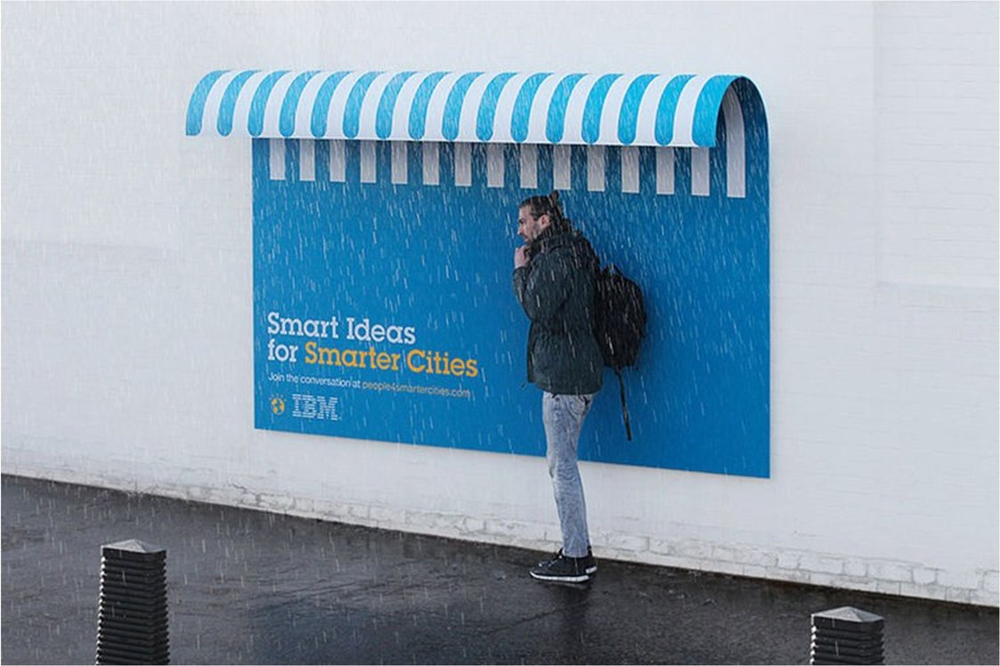
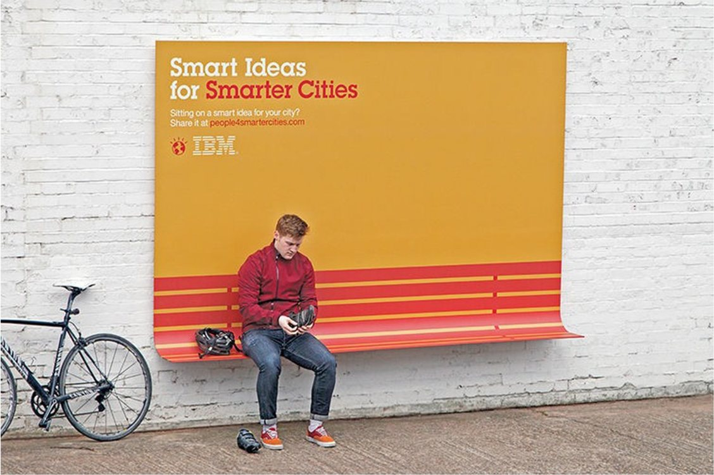
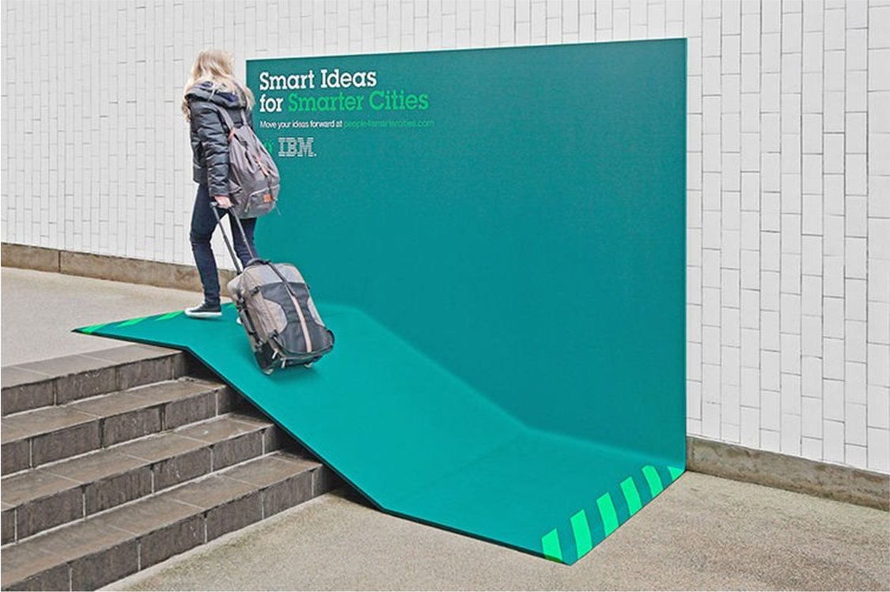
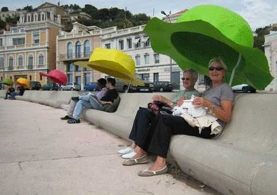
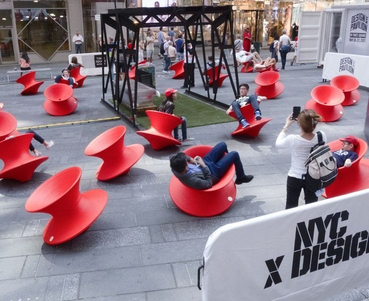
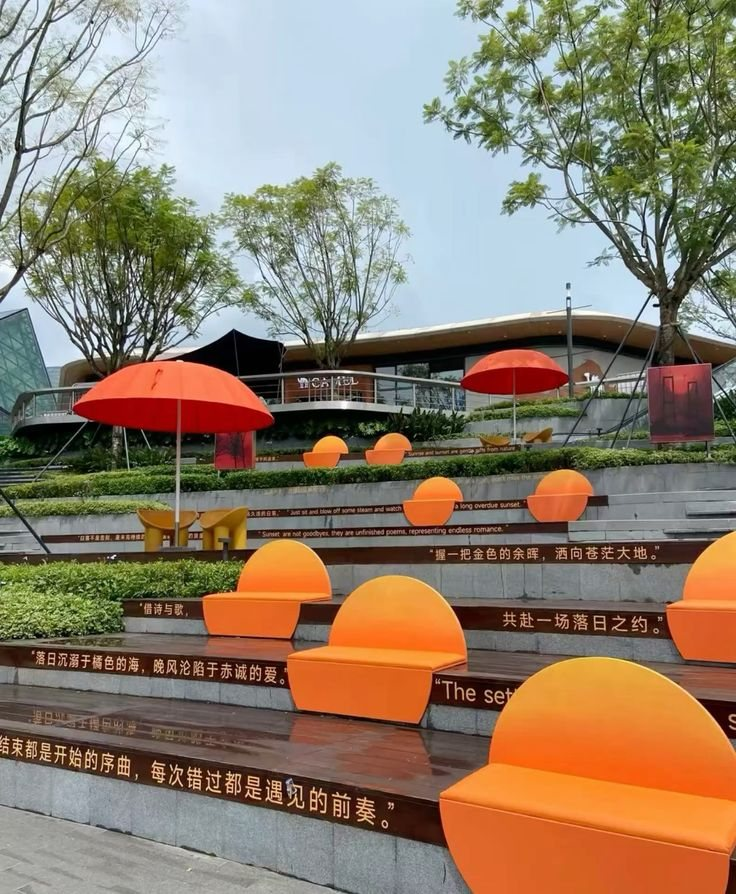
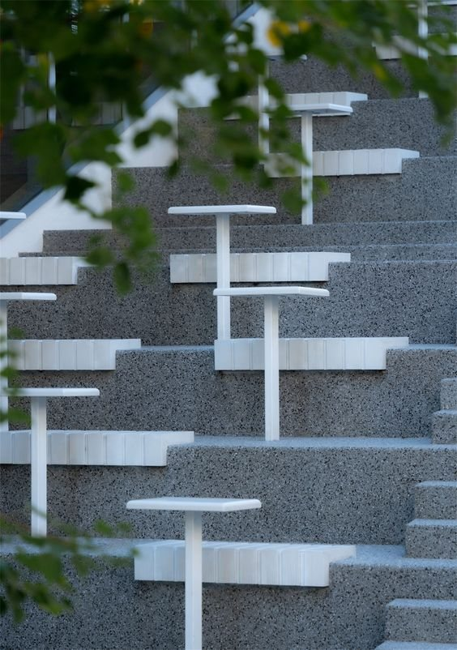

Vol. 1 봄호
노란 쉼표 의자
초고령 사회의 보행과 쉼
큰 정책 하나를,
시민이 보고 만지고 쓰는
작은 매체 하나로 번역합니다.
PUBLIC은 안전, 접근, 배려, 존엄, 포용 같은 공공가치를, IN은 그 가치를 생활의 현장에 넣는 일을 뜻합니다.
[ WHAT WE DO ]
기업의 협력 시설 프로젝트를 공공디자인의 관점으로 다시 풀어, 작지만 꼭 필요한 공공시설로 공공 영역에 실연합니다.
Public Value
기다릴 때 앉을 곳이 없는 순간, 길이 이해되지 않는 순간, 더위를 피할 곳이 없는 순간에서 출발합니다. 누가, 언제, 어디서 어려운지 한 문장으로 설명할 수 있어야 디자인의 목적이 분명해집니다.
Pop-up Public Facility
하루 안에 설치하고 철거할 수 있는 작은 시설, 바닥 표식, 그늘, 안내가 매개체입니다. 크기는 필요와 기능에 맞추고, 구매나 가입, 앱 없이 누구나 쓸 수 있게 합니다.
Agile Governance Lab
기업, 지자체, 대학, 주민이 호마다 바뀌며 함께 설치하고, 같은 기준으로 측정한 근거를 공유해 유지, 수정, 확대, 중단을 짧은 주기로 판단합니다.
[ HOW IT CONNECTS ]
정책디자인은 의제를, 공공디자인 반상회는 장소와 수요를, 공공디자인 실험실은 검증을 맡습니다. 퍼블릭인은 그 사이를 오가는 매체, 기록, 협약을 맡습니다.
[ RELEASE MODEL ]
매 호마다 정책, 매체, 협력 기업, 지자체, 장소가 바뀝니다. 연구실이 편집장이 되어 의제와 디자인 언어, 검증 기준을 지킵니다.
매달 1종
월간 노트. 의제 하나에 매체 하나를 개발하고, 시제품과 하루 시범을 거쳐 카드로 공개합니다.
분기마다 1호
계간 발매. 현장에 설치하고 12주 동안 같은 지표로 살핀 뒤 결과를 공개합니다.
[ RELEASES 2027 ]
Vol. 1 봄호
초고령 사회의 보행과 쉼
Vol. 2 여름호
폭염과 무더위쉼터 이용
Vol. 3 가을호
아동 보행 안전
Vol. 4 겨울호
한파와 고립
네 호는 서로 다른 정책과 협력 업종을 맡도록 짠 논의용 제안입니다. 호별 협력 기업, 장소, 일정은 아직 정하지 않았고, 그림은 실제 설치가 아닌 구상도입니다.
[ REFERENCES ]
광고판이 차양과 벤치가 되고, 방파제 좌석에 그늘이 꽂히고, 횡단보도 앞에 의자가 놓입니다. 퍼블릭인이 참고하는 국내외 사례입니다.








참고 사례의 사진은 퍼블릭인의 작업이 아니며, 저작권은 각 제작자와 촬영자에게 있습니다.
[ SEVEN CONDITIONS ]
[ MATURITY ]
계획과 실적을 섞지 않기 위해 모든 매체에 지금의 상태를 표시합니다. 실패한 호도 같은 형식으로 남깁니다.
[ PARTNERSHIP ]
기업의 이름은 시설 위 로고가 아니라 공개된 결과, 임직원이 함께한 설치, 호마다 쌓이는 기록 콘텐츠에 남습니다. 공공에 도움이 된 만큼 자연스럽게 알려지는 간접 마케팅입니다.
Company
호의 파트너로 제작과 관리를 맡고, 사회공헌 성과를 검증된 자료로 얻습니다.
Local Government
장소와 허가, 관리로 협력하고 정책 체감의 근거와 표준형 매체를 얻습니다.
University
학생이 개발과 관찰에 참여하고 현장 과제와 연구 자료를 얻습니다.
Citizens
의제를 내고 후보에 투표하며, 매일 쓰는 사람으로서 매체를 고쳐 갑니다.